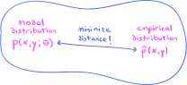

THIS CHAPTER IS CURRENTLY UNDER CONSTRUCTION!!!
10. Optimization#
As with most traditional textbooks in this field, the first half of this book has been almost exclusively concerned with building up the foundations of abstract probability theory. With this task completed, at this point, most textbooks would turn toward applications of this theory to statistics. We, however, will take an excursion over the next three chapters through applications of probability theory to machine learning before proceeding to traditional statistics.
Our excursion begins where we left off in Chapter 6. In that earlier chapter, we first encountered probabilistic models, but of a very simple type consisting of just a single random variable that depends on a few parameters. Given a real-world dataset and a candidate probabilistic model, the goal is to locate parameter values that minimize the “distance” or discrepancy between the probability distribution proposed by the model and the empirical distribution of the dataset. In the very simple case considered in Chapter 6 consisting of a normal distribution parametrized by its mean and variance, there were intuitively “obvious” parameter values given by the empirical mean and variance of the dataset.
In the next chapter, we will discuss much more complex types of probabilistic models in which multiple random (and deterministic) variables are connected through “webs of influence.” The number of parameters in these complex models will be correspondingly larger, and in general there will not be such “obvious” choices of parameter values as there were for the simple univariate models considered in Chapter 6. Instead, a systematic method for finding these parameter values is needed.
One such method was actually foreshadowed above when we mentioned that our goal is to minimize the discrepancy between the model and empirical distributions, denoted \(p(x;\btheta)\) and \(\hat{p}(x)\) respectively, where \(\btheta\) is the vector of parameters:
{kind=link}
Provided that we can cook up a function that measures this discrepancy precisely, our parameter search thus becomes an optimization problem in which we seek minimizers of the discrepancy function. (These latter functions go by many names, such as loss, cost, and risk functions.) At least in the sense that we use it in this book, the learning in machine learning thus amounts to optimization.
This explains and justifies the presence of the current chapter, which is entirely devoted to solving optimization problems. Many of the optimization problems we will encounter do not have closed-form solutions, and so we will need to study methods for approximating solutions. All the methods studied in this chapter are versions of an iterative method called gradient descent. For a warm-up, we will study a simple single-variable version of this method in Section 10.1 before proceeding to the “real” versions in Sections 10.3 and 10.4. We will put these methods to use in Chapter 12 after learning about general probabilistic models in Chapter 11.
One more thing, before beginning: The inclusion of gradient-based optimization algorithms and their applications to parameter estimation is what distinguishes this book from a traditional book on mathematical statistics. This material is often included in texts on machine learning, but it is not in any text on statistics (that I know of). However, we are just barely scratching the surface of optimization and machine learning. If you are new to these fields and want to learn more, I suggest beginning with the fifth chapter of [GBC16] for a quick overview. After this, you can move on to [HR22], before tackling the massive, encyclopedic texts [Mur22] and [Mur23].
10.1. Gradient descent in one variable#
In this section, we describe the single-variable version of the gradient descent algorithm to help motivate the general algorithm in arbitrary dimensions. To begin, consider the optimization problem of locating the minimum values of the polynomial function
This function is called the objective function of the optimization problem. Its graph is displayed in:
Show code cell source
import torch
from torch.utils.data import DataLoader
from torch.distributions.multivariate_normal import MultivariateNormal
import numpy as np
import seaborn as sns
import matplotlib.pyplot as plt
import matplotlib_inline.backend_inline
from itertools import product
import warnings
plt.style.use('../aux-files/custom_style_light.mplstyle')
matplotlib_inline.backend_inline.set_matplotlib_formats('svg')
warnings.filterwarnings("ignore")
blue = '#486AFB'
magenta = '#FD46FC'
def J(theta):
return (theta ** 4) - 6 * (theta ** 3) + 11 * (theta ** 2) - 7 * theta + 4
grid = torch.linspace(start=-0.5, end=3.5, steps=300)
plt.plot(grid, J(grid))
plt.xlabel(r'$\theta$')
plt.ylabel(r'$J(\theta)$')
plt.gcf().set_size_inches(w=5, h=3)
plt.tight_layout()

From the graph, we see that the objective function has minimums of approximately \(J(0.5)\) and \(J(2.7)\). By definition, a number \(\theta^\star\) is a local minimizer of \(J(\theta)\) provided that
for all \(\theta\) in a neighborhood of \(\theta^\star\); if this inequality holds for all \(\theta\), then \(\theta^\star\) is called a global minimizer of \(J(\theta)\). If we flip the inequality the other direction, then we obtain the definitions of local and global maximizers. Collectively, local and global minimizers and maximizers of \(J(\theta)\) are called extremizers, and the values \(J(\theta^\star)\) of the function where \(\theta^\star\) is an extremizer are called extrema or extreme values. Using this terminology, we would therefore say that \(0.5\) is (approximately) a local minimizer of \(J(\theta)\), while \(2.7\) is (approximately) a global minimizer.
Let’s see how the single-variable version of the gradient descent (GD) algorithm would solve this optimization problem. In this context, the GD algorithm is called the optimizer. This algorithm depends on an initial guess for a minimizer, as well as two parameters called the learning rate and the number of gradient steps. We will state the algorithm first, and then walk through some intuition for why it works:
Algorithm 10.1 (Single-variable gradient descent)
Input: A differentiable objective function \(J:\mathbb{R}\to \mathbb{R}\), an initial guess \(\theta_0\in \mathbb{R}\) for a local minimizer \(\theta^\star\), a learning rate \(\alpha>0\), and the number \(N\) of gradient steps.
Output: An approximation to a local minimizer \(\theta^\star\).
\(\theta := \theta_0\)
For \(t\) from \(1\) to \(N\), do:
\(\theta := \theta - \alpha J'(\theta)\)
Return \(\theta\).
Beginning from an initial guess \(\theta_0\) for a minimizer, the for loop in the GD algorithm outputs a sequence of approximations \(\theta_1,\ldots,\theta_t,\ldots,\theta_N\) for a minimizer. The last value \(\theta_N\) in the sequence is taken as the output of the algorithm; if the algorithm converges to a minimizer, then we should have \(\theta_N \approx \theta^\star\).
The equation
in the for loop is called the update rule; we say that the new parameter \(\theta_t\) is obtained by taking a gradient step from \(\theta_{t-1}\). The first update occurs when \(t=1\), yielding
To understand the intuition for this rule, consider the two cases that the derivative \(J'(\theta_0)\) is positive or negative:
Show code cell source
def J_prime(theta):
return 4 * (theta ** 3) - 18 * (theta ** 2) + 22 * theta - 7
plt.plot(grid, J(grid), color=blue)
plt.plot(grid, J_prime(-0.4) * (grid + 0.4) + J(-0.4), color=magenta, zorder=10)
plt.scatter(-0.4, J(-0.4), color=magenta, s=100, zorder=15)
plt.scatter(-0.4, 0, color=magenta, s=100, zorder=20)
plt.plot([-0.4, -0.4], [J(-0.4), 0], color=magenta, linestyle='--')
plt.xlim(-0.8, 3.7)
plt.ylim(-0.3, 12.2)
plt.text(-0.6, 0.6, r'$\theta_0$', ha='center', va='center', bbox=dict(facecolor='white', edgecolor=None))
plt.text(0, J(-0.4), r"$J'(\theta_0)<0$", ha='center', va='center', bbox=dict(facecolor='white', edgecolor=None))
plt.plot(grid, J(grid))
plt.plot(grid, J_prime(3.3) * (grid - 3.3) + J(3.3))
plt.scatter(3.3, J(3.3), color=magenta, s=100, zorder=10)
plt.scatter(3.3, 0, color=magenta, s=100, zorder=10)
plt.plot([3.3, 3.3], [J(3.3), 0], color=magenta, linestyle='--')
plt.text(3.5, 0.6, r'$\theta_0$', ha='center', va='center', bbox=dict(facecolor='white', edgecolor=None))
plt.text(2.9, J(3.3), r"$J'(\theta_0)>0$", ha='center', va='center', bbox=dict(facecolor='white', edgecolor=None))
plt.xlabel(r'$\theta$')
plt.ylabel(r'$J(\theta)$')
plt.gcf().set_size_inches(w=5, h=3)
plt.tight_layout()

In this plot, we’ve drawn the tangent lines to the graph of \(J(\theta)\) at two initial values \(\theta_0=-0.4\) and \(\theta_0=3.3\). Since the derivatives are the slopes of these tangent lines, the sign of the derivative is negative when \(\theta_0=-0.4\) and positive when \(\theta_0 = 3.3\). In the first case, we have
since \(\alpha>0\), while in the second case we have
But notice that the nearest minimizer to \(\theta_0 = -0.4\) is \(\theta^\star \approx 0.5\), and so the new \(\theta_1\) computed according to (10.2) should be closer to \(\theta^\star\) than the initial guess \(\theta_0\), provided that the (scaled) negative derivative
is not too large (in magnitude) causing the new \(\theta_1\) to “overshoot” the minimizer \(\theta^\star\). Similarly, the nearest minimizer to \(\theta_0 = 3.3\) is \(\theta^\star \approx 2.7\), so the new \(\theta_1\) computed according to (10.3) should be closer to \(\theta^\star\) than \(\theta_0\), again provided that the (scaled) negative derivative (10.4) is not too large in magnitude.
From these considerations, we conclude the following:
Observation 10.1
The negative derivative \(-J'(\theta)\) always “points downhill.”
When the gradient descent algorithm works, it locates a minimizer by following the negative derivative “downhill.”
The sense in which the negative derivative “points downhill” is made precise by our observation that it is positive if the point \((\theta_0,J(\theta_0))\) sits on a decreasing portion of the graph of \(J(\theta)\), and it is negative if \((\theta_0,J(\theta_0))\) is on an increasing portion of the graph. The role of the learning rate \(\alpha\) is to scale down the magnitude of the negative derivative so that the gradient step in the update rule does not cause \(\theta_1\) to “overshoot” a nearby minimizer.
Let’s run the GD algorithm four times, with various settings of the parameters:
Show code cell source
# define the gradient descent function
def GD(theta, J, num_steps, lr, decay=0):
# initialize lists to track objective values and thetas
running_objectives = []
running_thetas = []
# begin gradient descent loop
for t in range(num_steps):
# compute objective with current theta
objective = J(theta)
# compute gradients
objective.backward()
# append current objective and theta to running lists
running_objectives.append(objective.detach().view(1))
running_thetas.append(theta.detach().clone())
# take a step and update the theta
with torch.no_grad():
g = ((1 - decay) ** (t + 1)) * theta.grad
theta -= lr * g
# zero out the gradient to prepare for the next iteration
theta.grad.zero_()
# output tensors instead of lists
running_thetas = torch.row_stack(running_thetas)
running_objectives = torch.row_stack(running_objectives)
return running_thetas, running_objectives
# plot objective function
grid = torch.linspace(start=-0.5, end=3.5, steps=300)
axes_idx = list(product(range(2), repeat=2))
_, axes = plt.subplots(nrows=2, ncols=2, figsize=(8, 5))
for i in range(4):
idx = axes_idx[i]
axes[idx].plot(grid, J(grid))
# parameters for gradient descent
gd_parameters = {'theta': [torch.tensor([-0.5], requires_grad=True), torch.tensor([3.45], requires_grad=True), torch.tensor([-0.5], requires_grad=True), torch.tensor([3.45], requires_grad=True)],
'num_steps': [8, 7, 6, 6],
'lr': [1e-2, 1e-2, 1e-1, 2e-1]}
# run gradient descent and plot
for i in range(4):
gd_parameters_slice = {key: value[i] for key, value in gd_parameters.items()}
running_parameters, running_objectives = GD(**gd_parameters_slice, J=J)
idx = axes_idx[i]
lr = gd_parameters_slice['lr']
num_steps = gd_parameters_slice['num_steps'] - 1
axes[idx].step(x=running_parameters, y=running_objectives, where='post', color=magenta, zorder=2)
axes[idx].scatter(x=running_parameters, y=running_objectives, s=30, color=magenta, zorder=2)
axes[idx].scatter(x=running_parameters[0], y=running_objectives[0], s=100, color=magenta, zorder=2)
axes[idx].set_xlabel(r'$\theta$')
axes[idx].set_ylabel(r'$J(\theta)$')
axes[idx].set_title(fr'$\alpha={lr}$, $N={num_steps}$')
plt.tight_layout()

In all four plots, the large magenta dot represents the initial point \((\theta_0,J(\theta_0))\), while the smaller dots represent the points
where \(N\) is the number of gradient steps in the for loop in the GD algorithm. In the first row, the algorithm appears to be converging in both cases to the nearest minimizer to the initial guesses. In the second row, the learning rate is (relatively) large, causing the first gradient steps to “overshoot” the nearest minimizers to the initial guesses. However, the algorithm still appears to converge in both cases.
It is possible for the GD algorithm to diverge, especially if the learning rate is too large. For example, suppose that we set the learning rate to \(\alpha = 0.2\) and use \(\theta_0 = 3.5\) as our initial guess. Then three steps of gradient descent produce the following:
Show code cell source
gd_parameters = {'theta': torch.tensor([3.5], requires_grad=True),
'num_steps': 4,
'lr': 2e-1,}
running_parameters, running_objectives = GD(**gd_parameters, J=J)
grid = torch.linspace(start=-55, end=50, steps=300)
plt.plot(grid, J(grid))
plt.step(x=running_parameters, y=running_objectives, where='post', color=magenta, zorder=2)
plt.scatter(x=running_parameters, y=running_objectives, s=30, color=magenta, zorder=2)
plt.scatter(x=running_parameters[0], y=running_objectives[0], s=100, color=magenta, zorder=2)
plt.xlabel(r'$\theta$')
plt.ylabel(r'$J(\theta)$')
plt.gcf().set_size_inches(w=5, h=3)
plt.tight_layout()

We see already that \(J(\theta_3) \approx 10^7\); in fact, we have \(J(\theta_t) \to \infty\) as \(t\to\infty\) for these particular parameters. Of course, one can often prevent divergence by simply using a smaller learning rate, but sometimes a large initial learning rate is desirable to help the algorithm quickly find the neighborhood of a minimizer. So, what we desire is a scheme to shrink the learning rate from (relatively) large values to (relatively) smaller ones as the algorithm runs. This scheme is called learning rate decay or rate decay.
Algorithm 10.2 (Single-variable gradient descent with rate decay)
Input: A differentiable objective function \(J:\mathbb{R}\to \mathbb{R}\), an initial guess \(\theta_0\in \mathbb{R}\) for a local minimizer \(\theta^\star\), a learning rate \(\alpha>0\), a decay rate \(\gamma \in [0, 1)\), and the number \(N\) of gradient steps.
Output: An approximation to a local minimizer \(\theta^\star\).
\(\theta := \theta_0\)
For \(t\) from \(1\) to \(N\), do:
\(\theta := \theta - \alpha (1 - \gamma)^t J'(\theta)\)
Return \(\theta\).
Setting \(\gamma=0\) results in no rate decay. In our diverging example above, setting \(\gamma=0.2\) results in:
Show code cell source
gd_parameters = {'theta': torch.tensor([3.5], requires_grad=True),
'num_steps': 9,
'lr': 2e-1,}
running_parameters, running_objectives = GD(**gd_parameters, J=J, decay=0.1)
grid = torch.linspace(start=-0.5, end=3.5, steps=300)
plt.plot(grid, J(grid))
plt.step(x=running_parameters, y=running_objectives, where='post', color=magenta, zorder=2)
plt.scatter(x=running_parameters, y=running_objectives, s=30, color=magenta, zorder=2)
plt.scatter(x=running_parameters[0], y=running_objectives[0], s=100, color=magenta, zorder=2)
plt.xlabel(r'$\theta$')
plt.ylabel(r'$J(\theta)$')
plt.gcf().set_size_inches(w=5, h=3)
plt.tight_layout()

We have carried out \(N=8\) gradient steps, and it appears that the algorithm has successfully located the minimizer \(\theta^\star \approx 2.7\).
The learning rate \(\alpha\) and the decay rate \(\gamma\) are often chosen by experimentation.
Tip
When using the gradient descent algorithm to solve an optimization problem, try beginning with a learning and decay rate around \(\alpha \approx 0.01\) and \(\gamma \approx 0.1\), respectively.
These values may be tuned by the analyst by closely monitoring the values of the objective function \(J(\theta)\) as the algorithm runs. This is easy in the single-variable case, since one can plot the graph of \(J(\theta)\). In the multi-variable case, however, the graph of \(J(\theta)\) may live in many more dimensions than we can visualize, so the analyst might track the values of the objective function against the number of gradient steps. For example, with our polynomial objective function \(J(\theta)\) from above and
we would plot the following:
Show code cell source
gd_parameters = {'theta': torch.tensor([-0.5], requires_grad=True),
'num_steps': 15,
'lr': 1e-2,}
running_parameters, running_objectives = GD(**gd_parameters, J=J, decay=0.1)
plt.plot(range(len(running_objectives)), running_objectives)
plt.xlabel('gradient steps')
plt.ylabel('$J(\\theta)$')
plt.gcf().set_size_inches(w=5, h=3)
plt.tight_layout()

One may use this plot to decide on the total number \(N\) of gradient steps; simply choose \(N\) large enough to reach a point where the plot “plateaus” or “levels out,” indicating that the algorithm is converging on a minimizer. Alternatively, the analyst may build an automatic stopping condition into the algorithm that halts when the magnitude between successive objective values is less than some chosen threshold, say
where \(\epsilon>0\) is a small number.
10.2. Curvature and derivatives in higher dimensions#
As you certainly remember from elementary calculus, if \(\theta^\star\) is an extremizer of a differentiable function \(J:\bbr \to \bbr\), then \(\theta^\star\) must be a stationary point in the sense that
The name arises from the observation that small (first-order infinitesimal) perturbations of \(\theta^\star\) do not change the value \(J(\theta^\star)\), i.e., the value \(J(\theta^\star)\) remains stationary under small perturbations. In certain very favorable situations, we may be able to solve the stationarity equation (10.5) for \(\theta^\star\) to obtain a formula in closed form. In this case, the iterative gradient descent algorithm is not be needed.
You certainly also remember that the stationarity equation is only a necessary condition for \(\theta^\star\) to be an extremizer; sufficient conditions may be obtained by considering the local curvature of the graph of \(J\) near \(\theta^\star\). Furthermore, not only do curvature considerations help us identify extremizers, such considerations also help us gauge the speed of convergence of iterative algorithms like gradient descent, as we will see later in Section 10.3.
Our goal in this section is twofold: First, we briefly recall how local curvature helps us identify extremizers in the single-variable case. The relevant tools are the first and second derivatives. Then, we generalize these derivatives to higher dimensions obtaining gadgets called gradient vectors and Hessian matrices. We finish by indicating how the local curvature in higher dimensions may be computed using these new tools and, in particular, how we may use them to identify extremizers.
So, let’s begin with the familiar routine from single-variable calculus called the Second Derivative Test. Given a point \(\theta^\star\) and a twice-differentiable function \(J:\bbr \to \bbr\), the test splits into two cases:
If \(J'(\theta^\star) = 0\) and \(J''(\theta^\star) > 0\), then \(\theta^\star\) is a local minimizer.
If \(J'(\theta^\star) = 0\) and \(J''(\theta^\star) < 0\), then \(\theta^\star\) is a local maximizer.
Provided that the second derivative of \(J\) not only exists but is also continuous, then intuition for the Second Derivative Test may be explained via local curvature. Indeed, in the first case, positivity of the second derivative means that the graph of \(J\) is convex near \(\theta^\star\), while in the second case negativity of the second derivative means that the graph is concave. The nature of the curvature helps us distinguish between minimizers and maximizers:
Show code cell source
def f(x):
return x ** 2 + 4
def g(x):
return -x ** 2 + 4
functions = [f, g]
grid = np.linspace(-2, 2)
_, axes = plt.subplots(ncols=2, figsize=(8, 3), sharey=True, sharex=True)
for i, (function, axis) in enumerate(zip(functions, axes)):
axis.plot(grid, function(grid))
axis.scatter(0, 4, s=50, color=magenta, zorder=3)
if i == 0:
axis.text(0, 3, "$J '(0) = 0$, $J''(0)>0$", ha='center', va='center', bbox=dict(facecolor='white', edgecolor=None))
axis.set_title('convex $\Rightarrow$ minimizer')
else:
axis.text(0, 5, "$J '(0) = 0$, $J ''(0)<0$", ha='center', va='center', bbox=dict(facecolor='white', edgecolor=None))
axis.set_title('concave $\Rightarrow$ maximizer')
plt.tight_layout()

To see why second derivatives encode local curvature, let’s suppose \(J''(\theta^\star) >0\) at some point \(\theta^\star\). Then continuity of \(J''\) means that there is a number \(\dev>0\) such that \(J''(\theta)>0\) for all \(\theta\) in the open interval \(I = (\theta^\star - \dev, \theta^\star + \dev)\) centered at \(\theta^\star\). But the second derivative is the first derivative of the first derivative, and thus positivity of \(J''\) over \(I\) means that \(J'\) is increasing over \(I\). But the first derivative \(J'\) measures the slope of the graph of \(J\), and thus these slopes must increase as we move from left to right over \(I\). But this must mean that \(J\) is convex!
These curvature considerations make it intuitively clear why the sign of the second derivative \(J''(\theta^\star)\) (provided it is not zero) is enough to tell us whether we have located a minimizer or maximizer at a stationary point \(\theta^\star\). A more rigorous argument is based on Taylor’s Theorem, which says that for any pair of distinct numbers \(\theta\) and \(\theta^\star\) we may write
where the asymptotic “little-oh” notation \(o( (\theta-\theta^\star)^2)\) indicates a remainder term that goes to \(0\) faster than \((\theta-\theta^\star)^2\) does as \(\theta \to \theta^\star\). But then we have
provided \(\theta^\star\) is a stationary point. From this we conclude that \(J(\theta) > J(\theta^\star)\) for all \(\theta\) near \(\theta^\star\) if \(J''(\theta^\star)\) is positive, which shows that \(\theta^\star\) is indeed a local minimizer. Similar considerations apply if instead \(J''(\theta^\star)\) is negative.
How might these considerations and concepts generalize to higher dimensions?
To answer this question, let’s first increment the dimension by one, supposing that we have a twice-differentiable function
by which we mean all second-order partial derivatives of \(J\) exist. Actually, to obtain the best results relating curvature to second derivatives, we shall assume moreover that the second-order partial derivatives are also continuous, though this isn’t strictly needed for several of the definitions and results below. Functions with continuous first- and second-order partial derivatives are said to be of class \(C^2\) in the mathematical literature.
For example, let’s suppose that the graph of \(J\) is an upside down paraboloid:

At any given point on this surface (like the one above the black dot) there is not a single slope and curvature, but rather infinitely many slopes and curvatures in all the different directions that one may step in the plane \(\bbr^2\). These different directions may be represented as directional vectors in the plane; here are three examples:

Taking advantage of the very special circumstance that our graph is embedded as a surface in \(\bbr^3\), we may visualize the slopes and curvatures in these three directions by first intersecting the graph with three vertical planes:
{kind=link}
The intersections of these vertical planes and the surface yield curves called sections. For the planes displayed in the plot above, the sections are a trio of downward opening parabolas. The slopes and curvatures on the surface in the three directions are then the slopes and curvatures of these sections. It is thus of interest to obtain formulas for these sectional curves.
To obtain them, let’s take a step back from our specific example and consider a general function
of class \(C^2\). Let’s suppose that we have an arbitrary point \(\btheta \in \bbr^n\) at which we want to compute the directional slopes and curvatures. The direction will be represented by a directional vector, which is simply a vector \(\bv \in \bbr^n\). As we let \(r\in \bbr\) vary, the vector sum
traces out a line in \(\bbr^n\) through \(\btheta\) and in the direction of \(\bv\). The mapping
then traces out a \(1\)-dimensional curve on the graph of \(J\) embedded as a hypersurface in \(\bbr^{n+1}\). Generalizing from our considerations above, we then expect that the first and second derivatives of this mapping should yield the desired directional slopes and curvatures. This motivates the following:
Definition 10.1
Let \(J : \bbr^2 \to \bbr\) be a function of class \(C^2\), \(\btheta\in \bbr^n\) a point, and \(\bv \in \bbr^n\) a directional vector. We define the directional first derivative of \(J\) at \(\btheta\) in the direction \(\bv\) to be
while we define the directional second derivative to be
The familiar relations between these directional derivatives and partial deriatives pass through the gadgets defined in the following box. The first is familiar to us from our course in multi-variable calculus:
Definition 10.2
Let \(J : \bbr^2 \to \bbr\) be a function of class \(C^2\) and \(\btheta\in \bbr^n\) a point. We define the gradient vector to be
while we define the the Hessian matrix to be
Note that since \(J\) is of class \(C^2\), the Hessian matrix is symmetric.
The following important theorem expresses the relations between the first and second directional derivatives and the gradient vector and Hessian matrix.
Theorem 10.1 (Slopes, curvatures, and partial derivatives)
Let \(J:\bbr^n \to \bbr\) be a function of class \(C^2\), \(\btheta \in \bbr^n\) a point, and \(\bv \in \bbr^n\) a directional (unit) vector.
We have
\[ J_{\bv}'(\btheta) = \bv^\intercal \nabla(J(\btheta)). \]We have
\[ J_{\bv}''(\btheta) = \bv^\intercal \text{Hess}(J(\btheta)) \bv. \]
Proof. The proofs are simple exercises using the multi-variable Chain Rule. Indeed, note that
Plugging in \(r=0\) to both sides of this last equality then yields (1.). On the other hand, differentiating both sides with respect to \(r\) (and using the Chain Rule a second time) gives
Plugging in \(r=0\) to both ends of this last sequence of equations yields (2.). Q.E.D.
When the directional vector \(\bv\) is a unit vector, the value of the directional first derivative \(J'_\bv(\btheta)\) is interpreted as the (instantaneous) rate of change of \(J\) in the direction indicated by \(\bv\). Likewise, if \(\bv\) is unit vector, then the value of the directional second derivative \(J''_\bv(\btheta)\) is interpreted as the local curvature of \(J\) in the direction indicated by \(\bv\).
For our purposes, the most important property of the gradient vector \(\nabla (J(\btheta))\) is that it points in the direction of maximum rate of change. This is a direct consequence of the fact that the gradient vector is orthogonal to the level (hyper)surfaces of \(J\), otherwise called contours. By definition, such a level surface is the \((n-1)\)-dimensional set of solutions \(\btheta\in \bbr^n\) to an equation
for fixed \(c\in \bbr\). In the case that \(n=2\), these level surfaces are actually level curves; for our upside down paraboloid above, they are the blue ellipses in the following:
Show code cell source
def f(x, y):
return -4 * x ** 2 - y ** 2 + 15
grid = np.linspace(0, 2)
grid_1d = np.linspace(-4, 4)
x, y = np.meshgrid(grid_1d, grid_1d)
z = f(x, y)
def tangent_line(x):
return (8 / 3.5) * (x - 1) - 1.75
plt.contour(x, y, z, levels=10, colors=blue, linestyles='solid')
plt.plot(grid, tangent_line(grid), color=magenta)
plt.arrow(1, -1.75, -8 / 10, 3.5 / 10, head_width=0.2, head_length=0.3, fc=magenta, ec=magenta, linewidth=2)
plt.gcf().set_size_inches(4, 4)
plt.xlabel('$x$')
plt.ylabel('$y$')
plt.tight_layout()

In the case that \(n=2\), the fact that the gradient vector points in the direction of maximum rate of change is often described by saying that it points in the direction of the steepest ascent, visualizing the graph of \(J\) as a series of hills and valleys. In our contour plot above, we have drawn a gradient vector with its tail on a level curve. The straight line is the tangent line to the level curve, and it appears that the gradient is indeed orthogonal to this latter line.
It is intuitively clear from the equation
in Theorem 10.1 that the gradient is orthogonal to level surfaces. Indeed, if \(\bv\) is a tangent vector to the level surface passing through \(\btheta\), then \(J\) should not change (at least up to first order) as we step in the direction of \(\bv\) since (by definition) the function \(J\) is constant along its level surfaces. Thus, we have \(J_\bv'(\btheta)=0\), and so \(\bv^\intercal \nabla(J(\btheta))=0\). This shows \(\nabla(J(\btheta))\) is indeed orthogonal to the level surface passing through \(\btheta\). (For a more rigorous argument, see the proposition on page 23 of [GP10].)
Using these observations, we can easily prove the fundamental fact that the gradient vector “points uphill”, while its negative “points downhill”:
Theorem 10.2 (Gradient vectors point uphill)
Let \(J:\bbr^n \to \bbr\) be a function of class \(C^2\) and \(\btheta \in \bbr^n\) a point. Assuming it is nonzero, the gradient vector \(\nabla(J(\btheta))\) points in the direction of maximum rate of change at \(\btheta\), while the negative gradient vector \(-\nabla(J(\btheta))\) points in the direction of minimum rate of change.
Proof. Let \(\be_1,\ldots,\be_{n-1}\) be an orthonormal basis of the tangent space of the level surface through \(\btheta\). Letting \(\bg = \nabla(J(\btheta)) / || \nabla(J(\btheta)) || \) be the normalized gradient vector, from our considerations above we conclude that
is an orthonormal basis of \(\bbr^n\). Thus, given a unit directional vector \(\bv\), there are unique scalars \(\alpha_1,\ldots,\alpha_{n-1},\beta\in \bbr\) such that
Since \(\bv\) is a unit vector and (10.6) is an orthonormal basis, we must have
(This latter equation is a consequence of Parseval’s identity.) From Theorem 10.1, we get that
This latter quantity will be maximized when \(\beta=1\) and minimized when \(\beta=-1\). The desired results follow. Q.E.D.
Observe that the part about the negative gradient vector \(-\nabla(J(\btheta))\) “pointing downhill” is exactly the higher-dimensional version of the observation in Observation 10.1 regarding the negative derivative of a single-variable function. Just like its single-variable cousin, this will be key to the general multi-variable gradient descent algorithm that we will discuss in Section 10.3 below.
Let’s now turn toward minimizers and maximizers of a multi-variable function \(J:\bbr^n \to \bbr\) of class \(C^2\). They are defined just like in the single-variable case: A point \(\btheta^\star\) is a local minimizer if
for all \(\btheta\) in a neighborhood of \(\btheta^\star\); if this inequality holds for all \(\btheta\), then \(\btheta^\star\) is called a global minimizer. Flipping the inequality the other direction gives us the definitions of local and global maximizers. Collectively, local and global minimizers and maximizers are called extremizers.
As I hope you remember from multi-variable calculus, the stationarity equation
is a necessary condition for \(\btheta^\star\) to be an extremizer of \(J\). As in the single-variable case, one might hope to classify such a stationary point as a minimizer or maximizer based on the local curvature of \(J\). Indeed, it makes intuitive sense that if \(J\) is convex (concave) in all directions at \(\btheta^\star\), then \(\btheta^\star\) should be a local minimizer (maximizer). But from Theorem 10.1, the local directional curvatures at \(\btheta^\star\) are measured by the numbers
as \(\bv\) cycles through all unit vectors in \(\bbr^n\). Thus, if these numbers are always positive (negative), then we would expect the stationary point \(\btheta^\star\) is a local minimizer (maximizer). By the way, matrices with these special properties have names:
Definition 10.3
Let \(H\) be an \(n\times n\) real matrix.
If \(\bv^\intercal H \bv >0\) for all nonzero \(\bv \in \bbr^n\), then \(H\) is called positive definite. If instead of strict inequality \(>\) we have \(\geq\), then \(H\) is called positive semidefinite.
If \(\bv^\intercal H \bv <0\) for all nonzero \(\bv \in \bbr^n\), then \(H\) is called negative definite. If instead of strict inequality \(<\) we have \(\leq\), then \(H\) is called negative semidefinite.
So, the question becomes: If we know that the Hessian matrix is positive (negative) definite at a stationary point \(\btheta^\star\), is \(\btheta^\star\) necessarily a local minimizer (maximizer)?
The answer is yes!
The justification is essentially a repeat of the argument in the single-variable case. Indeed, there is an \(n\)-dimensional analog of Taylor’s Theorem that states the following: Let \(J:\bbr^n \to \bbr\) be a function of class \(C^2\). For any pair of distinct points \(\btheta\) and \(\btheta^\star\) we may write
But then
provided \(\btheta^\star\) is a stationary point and where \(\bv = (\btheta - \btheta^\star) / || \btheta - \btheta^\star ||\). From this we conclude that \(J(\btheta) > J(\btheta^\star)\) if the Hessian matrix is positive definite, which shows that \(\btheta^\star\) is a local minimizer. Similar considerations apply regarding local maximizers if instead the Hessian matrix is negative definite.
In very favorable situations, the Hessian matrix \(\text{Hess}(J(\btheta))\) is positive definite for all \(\btheta\in \bbr^n\). In this case, the function \(J\) is globally convex and has at most one stationary point which must be a global minimizer.
It is worth summarizing our findings in the form of a theorem:
Theorem 10.3 (Second Derivative Test)
Let \(J:\bbr^n \to \bbr\) be a function of class \(C^2\) and \(\btheta^\star \in \bbr^n\) a point.
If \(\nabla (J(\btheta_\star)) =0 \) and \(\text{Hess}(J(\btheta_\star))\) is positive definite, then \(\btheta^\star\) is a local minimizer.
If \(\nabla (J(\btheta_\star)) =0 \) and \(\text{Hess}(J(\btheta_\star))\) is negative definite, then \(\btheta^\star\) is a local maximizer.
Since we are assuming the second-order partial derivatives of all our functions are continuous, all our Hessian matrices are symmetric. This means that a very important and powerful theorem from advanced linear algebra may be brought to bear:
Theorem 10.4 (Eigenvalue criterion for (semi)definiteness)
Let \(H\in \bbr^{n\times n}\) be symmetric. Then the eigenvalues of \(H\) are real, and:
The matrix \(H\) is positive definite (semidefinite) if and only if all its eigenvalues are positive (nonnegative).
The matrix \(H\) is negative definite (semidefinite) if and only if all its eigenvalues are negative (nonpositive).
Proof. By the Spectral Theorem (see also Theorem 5.8 in Chapter 7 of [Art91]), there exists an orthonormal basis \(\be_1,\ldots,\be_n\) of \(\bbr^n\) consisting of eigenvectors of \(H\) and, furthermore, the associated eigenvalues \(\lambda_1,\ldots,\lambda_n\) are all real. Thus, given \(\bv \in \bbr^n\), we may write
for some scalars \(\alpha_1,\ldots,\alpha_n\in \bbr\). But then
where the last equality follows from the eigenvalue/eigenvector equations \(H \be_j = \lambda _j \be_j\) and the fact \(\be_1,\ldots,\be_n\) is orthonormal. The desired results then follow. Q.E.D.
A rough measure of the complexity of the local curvature at a minimizer is given by the ratio of the largest directional curvature to the smallest directional curvature. To be more precise, let \(J:\bbr^n \to \bbr\) be a function of class \(C^2\) and suppose \(\btheta^\star\) is a local minimizer with positive definite Hessian matrix \(H = \text{Hess}(J(\btheta^\star))\). By Theorem 10.4, all the eigenvalues of \(H\) are real and positive; let’s suppose that they are linearly ordered as
By the Spectral Theorem (see the proof of Theorem 10.4), we may choose an orthonormal basis of \(\bbr^n\) consisting of eigenvectors \(\be_1,\ldots,\be_n\). Thus, if \(\bv\) is a unit vector, we may write
for some unique scalars \(\alpha_1,\ldots,\alpha_n\) with
Then, the curvature in the direction of \(\bv\) is given by
Using the ordering (10.7) and (10.8), it is easy to show that the curvature (10.9) is maximized when \(\bv = \be_n\), in which case the curvature is the largest eigenvalue \(\lambda_n\). Similarly, it is easy to show that the curvature is minimized when \(\bv = \be_1\), in which case the curvature is the smallest eigenvalue \(\lambda_1\). The ratio of these two curvatures is denoted
and is called the condition number of \(H\). When \(\kappa(H)\) is large (in which case \(H\) is called ill-conditioned), the curvatures vary widely as we look in all different directions; conversely, when \(\kappa(H)\) is near \(1\), the directional curvatures are all nearly the same. As we will see in the next section, ill-conditioned Hessian matrices inflate an important upper-bound on the speed of convergence of gradient descent. In other words, ill-conditioned Hessian matrices may signal slow convergence of gradient descent.
10.3. Gradient descent in multiple variables#
With the gradient vector taking the place of the derivative, it is easy to generalize the single-variable gradient descent algorithm from Algorithm 10.2 to multiple variables:
Algorithm 10.3 (Multi-variable gradient descent with rate decay)
Input: A function \(J:\mathbb{R}^n\to \mathbb{R}\) of class \(C^2\), an initial guess \(\btheta_0\in \mathbb{R}^n\) for a local minimizer \(\btheta^\star\), a learning rate \(\alpha>0\), a decay rate \(\gamma \in [0, 1)\), and the number \(N\) of gradient steps.
Output: An approximation to a local minimizer \(\btheta^\star\).
\(\btheta := \btheta_0\)
For \(t\) from \(1\) to \(N\), do:
\(\btheta := \btheta - \alpha(1-\gamma)^t \nabla (J(\btheta))\)
Return \(\btheta\).
Just like the single-variable version, beginning from an initial guess \(\btheta_0\) for a minimizer, the for loop in the algorithm outputs a sequence of approximations \(\btheta_1,\ldots,\btheta_t,\ldots,\btheta_N\) for a minimizer. The last value \(\btheta_N\) in the sequence is taken as the output of the algorithm; if the algorithm converges to a minimizer, then we should have \(\btheta_N \approx \btheta^\star\).
For an example, let’s consider the polynomial objective function
in two dimensions. This function has two minimizers
as well as a “saddle point” at \((0.5, 0.5)\) where the gradient \(\nabla (J(\btheta))\) vanishes. A contour plot of its level curves looks like:
Show code cell source
# define the objective function
def J(theta):
theta_1, theta_2 = (theta[:, 0], theta[:, 1]) if theta.ndim == 2 else theta
return (theta_1 ** 2 + 10 * theta_2 ** 2) * ((theta_1 - 1) ** 2 + 10 * (theta_2 - 1) ** 2)
# plot contours of objective function
linspace_x = torch.linspace(start=-0.5, end=1.5, steps=200)
linspace_y = torch.linspace(start=-0.25, end=1.25, steps=200)
x, y = torch.meshgrid(linspace_x, linspace_y)
grid = torch.column_stack(tensors=(x.reshape(-1, 1), y.reshape(-1, 1)))
z = J(grid).reshape(x.shape)
plt.contour(x, y, z, levels=range(11), colors=blue)
plt.xlabel(r'$\theta_1$')
plt.ylabel(r'$\theta_2$')
plt.gcf().set_size_inches(w=5, h=4)
plt.tight_layout()

Let’s run the GD algorithm four times beginning with no rate decay, and track the approximations \(\btheta_t\) in \(\mathbb{R}^2\) plotted over the contours of \(J(\btheta)\):
Show code cell source
# plot the objective function
axes_idx = list(product(range(2), repeat=2))
_, axes = plt.subplots(nrows=2, ncols=2, figsize=(9, 9))
for k in range(4):
idx = axes_idx[k]
axes[idx].contour(x, y, z, levels=range(11), colors=blue, alpha=0.5)
# parameters for gradient descent
gd_parameters = {'theta': [torch.tensor([0.25, 1], requires_grad=True), torch.tensor([0.25, 1], requires_grad=True), torch.tensor([0.75, 1.2], requires_grad=True), torch.tensor([0.5, 0.49], requires_grad=True)],
'num_steps': [31, 21, 21, 21],
'lr': [4e-3, 1e-2, 1e-2, 1e-2]}
# run gradient descent and plot
for i in range(4):
gd_parameters_slice = {key: value[i] for key, value in gd_parameters.items()}
running_parameters, running_objectives = GD(**gd_parameters_slice, J=J)
idx = axes_idx[i]
lr = gd_parameters_slice['lr']
num_steps = gd_parameters_slice['num_steps'] - 1
axes[idx].plot(running_parameters[:, 0], running_parameters[:, 1], color=magenta)
axes[idx].scatter(running_parameters[:, 0], running_parameters[:, 1], s=30, color=magenta, zorder=2)
axes[idx].scatter(x=running_parameters[0, 0], y=running_parameters[0, 1], s=100, color=magenta, zorder=2)
axes[idx].set_xlabel(r'$\theta_1$')
axes[idx].set_ylabel(r'$\theta_2$')
axes[idx].set_title(fr'$\alpha={lr}$, $\gamma=0$, $N={num_steps}$')
plt.tight_layout()

The large magenta dots in the plots indicate the initial guesses \(\btheta_0\), while the smaller dots indicate the approximations \(\btheta_t\) for \(t>0\). The algorithm appears to be converging nicely to the minimizer \(\btheta^\star = (1,1)\) in the upper-left plot, while in the other three plots, the algorithm finds a neighborhood of a minimizer, but then oscillates back and forth and never appears to settle down. This is due jointly to the elliptical (non-circular) shape of the contours, the choice of initial values, and poorly chosen learning rates.
In particular, since the gradient is orthogonal to contours, we see that the negative gradient (which the GD algorithm is following) does not point directly toward the minimizers. The elliptical nature of the contours creates local curvatures at the minimizers that are quite different depending on which direction you look. From the previous section, we know that the local curvatures are encoded in the Hessian matrix; this suggests that studying the Hessian matrix might lead to insights into the convergence properties of gradient descent.
To begin this study, let’s start more generally with a function \(J:\bbr^n \to \bbr\) of class \(C^2\) and \(\btheta^\star\) a point. As we saw in the previous section, for \(\btheta\) near \(\btheta^\ast\), we have the local degree-\(2\) Taylor approximation
Thus, if we want to study (an approximation of) the local geometry of the graph of \(J\) near \(\btheta^\star\), we may as well replace \(J(\btheta)\) with the Taylor polynomial on the right-hand side of this approximation. We therefore assume that
where \(A \in \bbr^{n\times n}\) is a symmetric matrix, \(\bb\in \bbr^n\) is a vector, and \(c\in \bbr\) is a scalar. As you may easily compute, the gradient and Hessian matrices are given by
Assuming that the rate decay \(\gamma=0\), the update rule in the GD algorithm is given by
Then, if \(\btheta^\star\) is any stationary point (like a local minimizer), we may rewrite this update rule as
where \(I\) is the \(n\times n\) identity matrix. This leads us to the closed form of the update rule given by
for all \(t\geq 0\).
Choosing the learning rate \(\alpha\) is a balancing act: We want it large enough to obtain quick convergence, but small enough to avoid oscillations like in the plots above. To find the optimal \(\alpha\) in our current situation, let’s suppose that \(\btheta^\star\) is indeed a local minimizer with positive definite Hessian matrix \(\text{Hess}(J(\btheta^\star)) = A\). Suppose we linearly order the eigenvalues of \(A\) as
The eigenvalues of the matrix \(I - \alpha A\) are \(1 - \alpha \lambda_i\), for \(i=1,\ldots,n\). As long as we choose the learning rate \(\alpha\) such that
these latter eigenvalues are all nonnegative with
Since \(I-\alpha A\) is symmetric, its operator norm is equal to its largest eigenvalue, \(1-\alpha \lambda_1\). In particular, from (10.10) we obtain the upper bound
As we saw in (10.12), our choice of learning rate \(\alpha\) such that (10.11) holds implies \(1-\alpha \lambda_1<1\), and therefore this last displayed inequality shows that convergence is guaranteed as \(t\to \infty\). However, we may speed up the convergence by choosing \(\alpha\) to be the maximum value in the range given by (10.11), i.e., \(\alpha = 1/\lambda_n\). In this case, we have
where \(\kappa(A)\) is the condition number of \(A\). This shows that the fastest rate of convergence guaranteed by our arguments is controlled by the condition number of the Hessian matrix. In particular, if the Hessian matrix is ill-conditioned (i.e., if the condition number is large), then we cannot guarantee quick convergence (at least using the present arguments).
We may dampen these oscillations and encourage the algorithm to converge by adding learning rate decay. Here are four plots with the same initial values and learning rates, but with \(\gamma = 0.05\) and \(N\) increased to \(40\) to account for the learning rate decay:
Show code cell source
# plot the objective function
axes_idx = list(product(range(2), repeat=2))
_, axes = plt.subplots(nrows=2, ncols=2, figsize=(9, 9))
for k in range(4):
idx = axes_idx[k]
axes[idx].contour(x, y, z, levels=range(11), colors=blue, alpha=0.5)
# parameters for gradient descent
gd_parameters = {'theta': [torch.tensor([0.25, 1], requires_grad=True), torch.tensor([0.25, 1], requires_grad=True), torch.tensor([0.75, 1.2], requires_grad=True), torch.tensor([0.5, 0.49], requires_grad=True)],
'num_steps': [41, 41, 41, 41],
'lr': [5e-3, 1e-2, 1e-2, 1e-2]}
# run gradient descent and plot
for i in range(4):
gd_parameters_slice = {key: value[i] for key, value in gd_parameters.items()}
running_parameters, running_objectives = GD(**gd_parameters_slice, J=J, decay=0.05)
idx = axes_idx[i]
lr = gd_parameters_slice['lr']
num_steps = gd_parameters_slice['num_steps'] - 1
axes[idx].plot(running_parameters[:, 0], running_parameters[:, 1], color=magenta)
axes[idx].scatter(running_parameters[:, 0], running_parameters[:, 1], s=30, color=magenta, zorder=2)
axes[idx].scatter(x=running_parameters[0, 0], y=running_parameters[0, 1], s=100, color=magenta, zorder=2)
axes[idx].set_xlabel(r'$\theta_1$')
axes[idx].set_ylabel(r'$\theta_2$')
axes[idx].set_title(fr'$\alpha={lr}$, $\gamma=0.05$, $N={num_steps}$')
plt.tight_layout()

Now, the learning rate \(\alpha = 0.005\) in the first plot appears to be much too small causing the gradient steps to shrink too fast before the algorithm converges. On the other hand, the algorithm in the other three plots appears to be nicely converging to minimizers. We have effectively “dampened out” the wild oscillations in the first four plots above.
Here are the values of the objective function in all four runs, plotted against the number of gradient steps:
Show code cell source
# parameters for gradient descent
gd_parameters = {'theta': [torch.tensor([0.25, 1], requires_grad=True), torch.tensor([0.25, 1], requires_grad=True), torch.tensor([0.75, 1.2], requires_grad=True), torch.tensor([0.5, 0.49], requires_grad=True)],
'num_steps': [41, 41, 41, 41],
'lr': [5e-3, 1e-2, 1e-2, 1e-2]}
# run gradient descent and plot
axes_idx = list(product(range(2), repeat=2))
_, axes = plt.subplots(nrows=2, ncols=2, figsize=(9, 6), sharey=True)
for i in range(4):
gd_parameters_slice = {key: value[i] for key, value in gd_parameters.items()}
_, running_objectives = GD(**gd_parameters_slice, J=J, decay=0.05)
idx = axes_idx[i]
lr = gd_parameters_slice['lr']
num_steps = gd_parameters_slice['num_steps'] - 1
axes[idx].plot(range(len(running_objectives)), running_objectives)
axes[idx].set_xlabel('gradient steps')
axes[idx].set_ylabel('$J(\\theta)$')
axes[idx].set_title(fr'$\alpha={lr}$, $\gamma=0.05$, $N={num_steps}$')
plt.tight_layout()

Notice the initial “overshoot” in the plot in the bottom left, causing the objective function \(J(\btheta)\) to increase after the first gradient step. Recall also that the initial value \(\btheta_0\) in the bottom right plot is near the saddle point \((0.5,0.5)\), causing \(\nabla J(\btheta_0) \approx 0\). This accounts for the small initial changes in the objective function \(J(\btheta)\) indicated by the (nearly) horizontal stretch early in the run of the algorithm.
Of course, an objective function \(J:\mathbb{R}^2 \to \mathbb{R}\) defined on a \(2\)-dimensional input space is still not a realistic example of the objective functions encountered in the real world. In two dimensions, we have the ability to plot the algorithm’s progress through \(\mathbb{R}^2\) on a contour plot, as we did above. In dimensions \(n\geq 4\) we lose this visual aid, though one may plot input variables two at a time in \(\mathbb{R}^2\). But no matter the input dimension, we may always plot the objective values against the number of gradient steps as a diagnostic plot for convergence.
10.4. Stochastic gradient descent#
The special types of objective functions that we will see in Chapter 12 are so-called stochastic objective functions of the form
where \(\mathbf{X}\) is an \(n\)-dimensional random vector, \(\btheta \in \mathbb{R}^k\) is a \(k\)-dimensional parameter vector, and \(g:\mathbb{R}^{n+k} \to \mathbb{R}\) is a function. In many important cases, the probability distribution of \(\mathbf{X}\) is discrete and does not depend on \(\btheta\), so that
where \(p(\mathbf{x})\) is the mass function of \(\mathbf{X}\). In fact, the mass function \(p(\mathbf{x})\) will often be an empirical mass function of an observed multivariate dataset
where we use a superscript with parentheses to index the data vectors rather than a subscript. Then, from (10.14) and the definition of the mass function, we get
Provided that the function is differentiable with respect to the parameter vector \(\btheta\), we have
where we write \(\nabla_\btheta\) to emphasize that the gradient is computed with respect to the parameter vector \(\btheta\). In this context, the gradient descent algorithm applied to (10.15) is given a new name:
Definition 10.4
The batch gradient descent algorithm is the gradient descent algorithm applied to a stochastic objective function of the form (10.15).
Let’s take a look at a simple example. Suppose that we define
where \(\btheta,\btheta\in \bbr^2\) and the vertical bars represent the usual Euclidean norm. We create a bivariate dataset by drawing a random sample of size \(1{,}024\) drawn from a \(\mathcal{N}_2(\boldsymbol0,I)\) distribution. A scatter plot of the dataset looks like this:
Show code cell source
torch.manual_seed(42)
dataset = MultivariateNormal(loc=torch.zeros(2), covariance_matrix=torch.eye(2)).sample(sample_shape=(1024,))
sns.scatterplot(x=dataset[:, 0], y=dataset[:, 1])
plt.xlabel('$x_1$')
plt.ylabel('$x_2$')
plt.gcf().set_size_inches(w=5, h=3)
plt.tight_layout()

Then, two runs of the batch gradient descent algorithm produce the following plots of the objective function versus gradient steps:
Show code cell source
def SGD(parameters, dataset, J, num_epochs, batch_size, lr, tracking, decay=0, max_steps=-1, shuffle=True, random_state=None):
# define data loader
if random_state is not None:
torch.manual_seed(random_state)
data_loader = DataLoader(dataset=dataset, batch_size=batch_size, shuffle=shuffle)
# initialize lists and a dictionary to track objectives and parameters
running_objectives = []
running_parameters = {name: [] for name in parameters.keys()}
step_count = 0
# begin looping through epochs
for t in range(num_epochs):
# initialize a list to track per-step objectives. this will only be used if
# tracking is set to 'epoch'
per_step_objectives = []
# begin gradient descent loop
for mini_batch in data_loader:
# compute objective with current parameters
objective = J(mini_batch, parameters)
# if we are tracking per gradient step, then add objective value and parameters to the
# running lists. otherwise, we are tracking per epoch, so add the objective value to
# the list of per-step objectives
if tracking == 'gd_step':
running_objectives.append(objective.detach().view(1))
for name, parameter in parameters.items():
running_parameters[name].append(parameter.detach().clone())
else:
per_step_objectives.append(objective.detach().view(1))
# compute gradients
objective.backward()
# take a gradient step and update the parameters
with torch.no_grad():
for parameter in parameters.values():
g = ((1 - decay) ** (t + 1)) * parameter.grad
parameter -= lr * g
# zero out the gradients to prepare for the next iteration
for parameter in parameters.values():
parameter.grad.zero_()
# if we hit the maximum number of gradient steps, break out of the inner `for`
# loop
step_count += 1
if step_count == max_steps:
break
# if we are tracking per epoch, then add the average per-step objective to the
# list of running objectives. also, add the current parameters to the list of running
# parameters
if tracking == 'epoch':
per_step_objectives = torch.row_stack(per_step_objectives)
running_objectives.append(torch.mean(per_step_objectives))
for name, parameter in parameters.items():
running_parameters[name].append(parameter.detach().clone())
# if we hit the maximum number of gradient steps, break out of the outer `for`
# loop
if step_count == max_steps:
break
# output tensors instead of lists
running_parameters = {name: torch.row_stack(l) for name, l in running_parameters.items()}
running_objectives = torch.row_stack(running_objectives)
return running_parameters, running_objectives
# define the objective function
def g(x, parameters):
if not isinstance(parameters, dict):
raise TypeError('Parameters must be a dictionary of tensors.')
theta = list(parameters.values())[0]
return torch.norm(theta - x, dim=1) ** 2
def J(x, parameters):
return torch.mean(g(x, parameters))
# get grids for contour plots
linspace = torch.linspace(start=-2, end=2, steps=200)
grid_1, grid_2 = torch.meshgrid(linspace, linspace)
grid = torch.column_stack(tensors=(grid_1.reshape(-1, 1), grid_2.reshape(-1, 1)))
z_list = []
for theta in grid:
z_list.append(J(dataset, {'theta': theta}))
z = torch.row_stack(tensors=z_list).reshape(shape=grid_1.shape)
# gradient descent parameters
batch_size = len(dataset)
random_state = 42
gd_parameters = {'num_epochs': [10, 50],
'lr': [1e-1, 3e-2]}
parameters_list = []
objectives_list = []
# run gradient descent
for i in range(2):
parameters = {'theta': torch.tensor([1.5, 1.5], requires_grad=True)}
gd_parameters_slice = {key: value[i] for key, value in gd_parameters.items()}
running_parameters, running_objectives = SGD(parameters=parameters,
dataset=dataset,
J=J,
tracking='gd_step',
batch_size=batch_size,
random_state=random_state,
**gd_parameters_slice)
parameters_list.append(running_parameters)
objectives_list.append(running_objectives)
# plot the objective function
_, axes = plt.subplots(nrows=1, ncols=2, figsize=(7, 3))
for i in range(2):
objectives = objectives_list[i]
gd_parameters_slice = {key: value[i] for key, value in gd_parameters.items()}
lr = gd_parameters_slice['lr']
axes[i].plot(range(len(objectives)), objectives)
axes[i].set_xlabel('gradient steps')
axes[i].set_ylabel('objective')
axes[i].set_title(fr'$\alpha={lr}$, $\gamma=0$')
plt.tight_layout()

If we track the parameters \(\btheta = (\theta_1,\theta_2)\) during the runs, we get the following:
Show code cell source
_, axes = plt.subplots(nrows=1, ncols=2, figsize=(9, 4.5))
for i in range(2):
running_parameters = parameters_list[i]['theta']
gd_parameters_slice = {key: value[i] for key, value in gd_parameters.items()}
lr = gd_parameters_slice['lr']
num_epochs = gd_parameters_slice['num_epochs']
axes[i].contour(grid_1, grid_2, z, levels=torch.arange(start=0, end=10, step=0.5), colors=blue, alpha=0.5)
axes[i].plot(running_parameters[:, 0], running_parameters[:, 1], color=magenta)
axes[i].scatter(running_parameters[:, 0], running_parameters[:, 1], s=30, color=magenta, zorder=2)
axes[i].scatter(running_parameters[0, 0], running_parameters[0, 1], s=100, color=magenta, zorder=2)
axes[i].set_title(fr'$\alpha={lr}$, $\gamma=0$, gradient steps$={num_epochs}$')
axes[i].set_xlabel(r'$\theta_1$')
axes[i].set_ylabel(r'$\theta_2$')
plt.tight_layout()

In both cases, notice that the algorithm is nicely converging toward the minimizer at \(\btheta^\star \approx (0,0)\).
One of the drawbacks of the batch algorithm is that it needs the entire dataset in order to take just a single gradient step. This isn’t an issue for our small toy dataset of size \(m=1{,}024\), but for the large datasets that you may encounter in the real world, this can be a serious hindrance to fast convergence.
One method for dealing with this bottleneck is to use mini-batches of the data to compute gradient steps. To do so, we begin by randomly partitioning the dataset into subsets \(B_1,B_2,\ldots,B_\ell\) called mini-batches:
Supposing that the \(j\)-th mini-batch \(B_j\) has size \(\ell_j\), we would then expect from (10.15) that
Very often, the mini-batch sizes \(\ell_1,\ell_2,\ldots,\ell_p\) are chosen to be equal to a common value \(\ell\), except (possibly) for one to compensate for the fact that \(m\) may not be evenly divisible by \(\ell\). For example, if \(m=100\) and \(\ell=30\), then we would have four mini-batches, three of size \(\ell=30\) and the fourth of size \(10\).
As you are about to see, the mini-batch version of the GD algorithm loops over the mini-batches (10.17) and computes gradient steps as in (10.18). A single loop through all the mini-batches, covering the entire dataset, is called an epoch. As the vanilla version of the GD algorithm takes the number of gradient steps as a parameter, the new version of the algorithm takes the number of epochs as a parameter. This new version is called the stochastic gradient descent (SGD) algorithm:
Algorithm 10.4 (Stochastic gradient descent with rate decay)
Input: A dataset \(\btheta^{(1)},\ldots,\btheta^{(m)}\in \mathbb{R}^n\), a stochastic objective function
where \(g:\mathbb{R}^{n+k}\to \mathbb{R}\) is a differentiable function, an initial guess \(\btheta_0\in \mathbb{R}^k\) for a minimizer \(\btheta^\star\) of \(J\), a learning rate \(\alpha>0\), a decay rate \(\gamma \in [0, 1)\), a mini-batch size \(\ell\), and the number \(N\) of epochs.
Output: An approximation to a minimizer \(\btheta^\star\).
\(\btheta := \btheta_0\)
For \(t\) from \(1\) to \(N\), do:
Randomly partition the dataset into mini-batches (10.17) of size \(\ell\).
For each mini-batch \(B_j\), do:
\(\btheta := \btheta - \frac{\alpha(1-\gamma)^t}{\ell} \sum_{x^{(i)} \in B_j} \nabla_\btheta g\big(\btheta^{(i)}; \btheta\big)^T\)
Return \(\btheta\).
Notice that the dataset is randomly partitioned into mini-batches inside each iteration of the per-epoch for loop; and remember that there may be one mini-batch of size \(\neq \ell\) if the size of the dataset \(m\) is not divisible by \(\ell\).
It is possible to select a mini-batch size of \(\ell=1\), so that the algorithm computes a gradient step per data point. Some references refer to this algorithm as just stochastic gradient descent. In our example (10.16) from above, a step size of \(\ell=1\) yields the following plots of objective values versus gradient steps:
Show code cell source
# SGD parameters
num_epochs = 1
batch_size = 1
random_state = 42
gd_parameters = {'lr': [1e-1, 1e-1, 3e-2, 3e-2],
'max_steps': [10, 100, 80, 160]}
parameters_list = []
objectives_list = []
# run SGD
for i in range(4):
parameters = {'theta': torch.tensor([1.5, 1.5], requires_grad=True)}
gd_parameters_slice = {key: value[i] for key, value in gd_parameters.items()}
running_parameters, running_objectives = SGD(parameters=parameters,
dataset=dataset,
J=J,
tracking='gd_step',
num_epochs=1,
batch_size=batch_size,
random_state=random_state,
**gd_parameters_slice)
parameters_list.append(running_parameters)
objectives_list.append(running_objectives)
# plot the objective function
_, axes = plt.subplots(nrows=2, ncols=2, figsize=(9, 6), sharey=True)
for i in range(4):
idx = axes_idx[i]
objectives = objectives_list[i]
gd_parameters_slice = {key: value[i] for key, value in gd_parameters.items()}
lr = gd_parameters_slice['lr']
axes[idx].plot(range(len(objectives)), objectives)
axes[idx].set_xlabel('gradient steps')
axes[idx].set_ylabel('objective')
axes[idx].set_title(fr'$\alpha={lr}$, $\gamma=0$')
plt.tight_layout()

The plots are very noisy, especially for large numbers of gradient steps. However, a slight downward trend in objective values is detectable, indicating that the algorithm is locating the minimizer. The trace of the algorithm through parameter space is shown in:
Show code cell source
_, axes = plt.subplots(nrows=2, ncols=2, figsize=(9, 9))
for i in range(4):
idx = axes_idx[i]
running_parameters = parameters_list[i]['theta']
gd_parameters_slice = {key: value[i] for key, value in gd_parameters.items()}
lr = gd_parameters_slice['lr']
max_steps = gd_parameters_slice['max_steps']
axes[idx].contour(grid_1, grid_2, z, levels=torch.arange(start=0, end=10, step=0.5), colors=blue, alpha=0.5)
axes[idx].plot(running_parameters[:, 0], running_parameters[:, 1], color=magenta)
axes[idx].scatter(running_parameters[:, 0], running_parameters[:, 1], s=30, color=magenta, zorder=2)
axes[idx].scatter(running_parameters[0, 0], running_parameters[0, 1], s=100, color=magenta, zorder=2)
axes[idx].set_title(rf'$\alpha={lr}$, $\gamma=0$, gradient steps$={max_steps}$')
axes[idx].set_xlabel(r'$\theta_1$')
axes[idx].set_ylabel(r'$\theta_2$')
plt.tight_layout()

The traces are very noisy, especially in the first row with the large learning rate \(\alpha=0.1\). Nevertheless, it is clear that the algorithm has found the neighborhood of the minimizer at \((0,0)\). We might try to tame the noise in these plots by increasing the decay rate, but according to our implementation, that would be equivalent to simply decreasing the learning rate since none of these four runs of the algorithm completes a full epoch. Indeed, notice that the power \(t\) in the expression \((1-\gamma)^t\) in the statement of the algorithm counts the number of epochs.
Show code cell source
# mini-batch gradient descent parameters
random_state = 42
gd_parameters = {'num_epochs': [1, 1, 1, 2],
'lr': [1e-1, 1e-1, 1e-1, 1e-1],
'batch_size': [2, 8, 32, 128],
'max_steps': [60, 15, 12, 12]}
parameters_list = []
objectives_list = []
# run mini-batch gradient descent
for i in range(4):
parameters = {'theta': torch.tensor([1.5, 1.5], requires_grad=True)}
gd_parameters_slice = {key: value[i] for key, value in gd_parameters.items()}
running_parameters, running_objectives = SGD(parameters=parameters,
dataset=dataset,
J=J,
tracking='gd_step',
random_state=random_state,
**gd_parameters_slice)
parameters_list.append(running_parameters)
objectives_list.append(running_objectives)
# plot the objective function
_, axes = plt.subplots(nrows=2, ncols=2, figsize=(9, 6), sharey=True)
for i in range(4):
idx = axes_idx[i]
objectives = objectives_list[i]
gd_parameters_slice = {key: value[i] for key, value in gd_parameters.items()}
batch_size = gd_parameters_slice['batch_size']
lr = gd_parameters_slice['lr']
axes[idx].plot(range(len(objectives)), objectives)
axes[idx].set_xlabel('gradient steps')
axes[idx].set_ylabel('objective')
axes[idx].set_title(rf'$\ell={batch_size}$, $\alpha={lr}$, $\gamma=0$')
plt.tight_layout()

Mini-batch GD parameters:
Show code cell source
_, axes = plt.subplots(nrows=2, ncols=2, figsize=(9, 9))
for i in range(4):
idx = axes_idx[i]
running_parameters = parameters_list[i]['theta']
gd_parameters_slice = {key: value[i] for key, value in gd_parameters.items()}
batch_size = gd_parameters_slice['batch_size']
lr = gd_parameters_slice['lr']
max_steps = gd_parameters_slice['max_steps']
total_data_points = batch_size * max_steps
axes[idx].contour(grid_1, grid_2, z, levels=torch.arange(start=0, end=10, step=0.5), colors=blue, alpha=0.5)
axes[idx].plot(running_parameters[:, 0], running_parameters[:, 1], color=magenta)
axes[idx].scatter(running_parameters[:, 0], running_parameters[:, 1], color=magenta, zorder=2)
axes[idx].scatter(running_parameters[0, 0], running_parameters[0, 1], s=100, color=magenta, zorder=2)
axes[idx].set_title(rf'$\ell={batch_size}$, $\alpha={lr}$, $\gamma=0$, gradient steps$={max_steps}$')
axes[idx].set_xlabel(r'$\theta_1$')
axes[idx].set_ylabel(r'$\theta_2$')
plt.tight_layout()